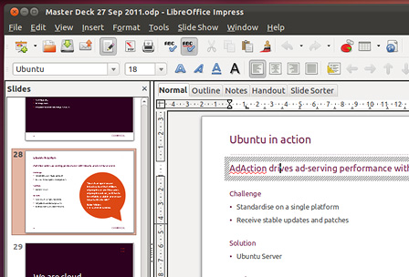

<div class="header"><h1 class="title">Create professional documents and presentations</h1></div>

<div class="main">

<div class="text">

<div class="description">
OpenOffice.org is fully compatible with Microsoft Office and has everything you need to create professional documents, spreadsheets and presentations. OpenOffice.org is easy to use, packed with the features you need and completely free.
</div>
<div class="footer">
TODO: included / available software!
</div>

</div>



</div>
